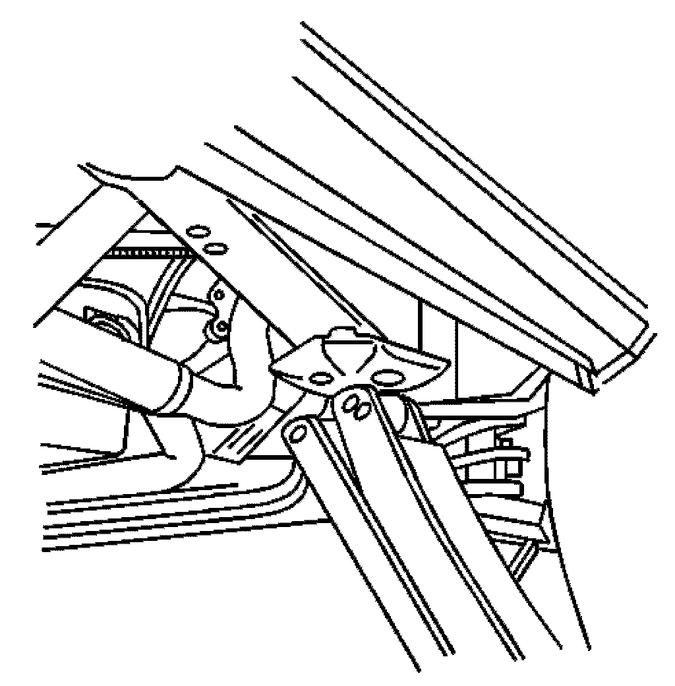

Vehicle Lifting: Service and Repair
Lifting and Jacking the Vehicle
Caution: To avoid any vehicle damage, serious personal injury or death, always use the jackstands to support the vehicle when lifting the vehicle with a jack.
Caution: To avoid any vehicle damage, serious personal injury or death when major components are removed from the vehicle and the vehicle is supported by a hoist, support the vehicle with jack stands at the opposite end from which the components are being removed and strap the vehicle to the hoist.
Notice: Perform the following steps before beginning any vehicle lifting or jacking procedure:
- Remove or secure all of the vehicle's contents in order to avoid any shifting or any movement that may occur during the vehicle lifting or jacking procedure.
- The lifting equipment or the jacking equipment weight rating must meet or exceed the weight of the vehicle and any vehicle contents.
- The lifting equipment or the jacking equipment must meet the operational standards of the lifting equipment or jacking equipment's manufacturer.
- Perform the vehicle lifting or jacking procedure on a clean, hard, dry, level surface.
- Perform the vehicle lifting or jacking procedure only at the identified lift points. DO NOT allow the lifting equipment or jacking equipment to contact any other vehicle components.
Failure to perform the previous steps could result in damage to the lifting equipment or the jacking equipment, the vehicle, and/or the vehicle's contents.
For lifting the vehicle, various lift points are recommended. Before you begin any lifting procedure, place the vehicle on a clean, hard, level surface. Verify that all the lifting equipment meets weight standards and is in good working order. Verify that all of the vehicle loads are equally distributed and secure. If you are only supporting the vehicle at the frame side rails, verify that the lifting equipment does not put too much stress on, or weaken, the frame side rails.
During hoisting, do NOT damage the fuel tanks, the exhaust system, or the underbody.
Frame Contact Hoist
Front Hoist Pads:
Important: The front hoist pads must not contact the rocker panels, the front fender, or the floor pan.
Position the front hoist pads under the front frame between the lower control arm and the frame pad.
Rear Hoist Pads:
Important: The rear hoist pads must not contact the body rocker panels or the floor pan.
Position the rear hoist pads under the rear spring, just behind the hanger.
Suspension Contact Hoist
Front Lift:
Position the front lift under the outer edge of the front suspension lower control arms.
Rear Lift:
Position the rear lift under the axle housing tubes on each side of the differential.
Do not damage the stabilizer bar.
Jacking
When you are lifting a vehicle with a vehicle jack or a floor jack, block the wheels at the opposite end from which you are lifting. Use jack stands to provide additional support.
Under the Frame Rails:

Important: The floor jack pad must not contact rocker panel or the floor pan.
Position the floor jack pad under the frame rail pad.
Under the Rear Differential:
Position the floor jack pad under the center of the rear axle differential.
Do not damage the establisher bar.
Under the Rear Spring Hanger:

Position the jack under the rear spring hanger.
Jack Stands
When you support the vehicle with jack stands, place the jack stands under the frame, the front suspension crossmember, or the rear axle.